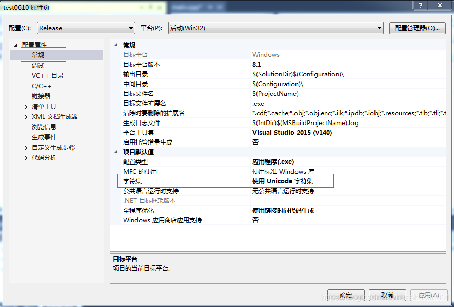

VS集成开发环境，字符集选择“使用多字节字符集”和“使用Unicode字符集”的直接区别就是：编译器是否增加了宏定义——UNICODE。当选择“使用Unicode字符集”时，编译器会增加宏定义——UNICODE；而选择“使用多字节字符集”时，编译器则不会增加宏定义——UNICODE。

而是否增加了宏定义UNICODE，则影响了一些Windows API的使用。例如：
例子1：MessageBox的使用
windows API对MessageBox的定义如下
1
2
3
4
5
6
7
8
9
10
11
12
13
14
15
16
17
18
19
20
21
| WINUSERAPI
int
WINAPI
MessageBoxA(
__in_opt HWND hWnd,
__in_opt LPCSTR lpText,
__in_opt LPCSTR lpCaption,
__in UINT uType);
WINUSERAPI
int
WINAPI
MessageBoxW(
__in_opt HWND hWnd,
__in_opt LPCWSTR lpText,
__in_opt LPCWSTR lpCaption,
__in UINT uType);
#ifdef UNICODE
#define MessageBox MessageBoxW
#else
#define MessageBox MessageBoxA
#endif // !UNICODE
|
当选用“使用Unicode字符集”时，调用函数MessageBox，实际使用的是MessageBoxW，MessageBoxW关于字符串的入参类型是LPCWSTR，使用MessageBox时，字符串前需加L
::MessageBox(NULL, L”这是一个测试程序!”, L”Title”, MB_OK);
当选用“使用多字节字符集”时，调用函数MessageBox，实际使用的是MessageBoxA，MessageBoxA关于字符串的入参类型是LPCSTR
::MessageBox(NULL, “这是一个测试程序!”, “Title”, MB_OK);
因此，“使用Unicode字符集”和“使用多字节字符集”的直接区别是：编译器是否增加了宏定义——UNICODE。而是否增加了宏定义（UNICODE）则决定了Windows API函数参数有字符串时使用的多字节字符集还是宽字符字符集。
下面介绍多字节字符集还是宽字符(UNICODE)字符集的区别。
多字节字符集和宽字符(UNICODE)字符集的区别
要理解字节字符集还是宽字符(UNICODE)字符集的区别，首先先理解char与wchar_t的区别
- char与wchar_t的区别
char叫多字节字符，一个char占一个字节，之所以叫多字节字符是因为它表示一个字符时可能是一个字节也可能是多个字节。一个英文字符(如’s’)用一个char(一个字节)表示，一个中文汉字(如’我’)用2个char(两个字节)表示。
wchar_t被称为宽字符，一个wchar_t占2个字节。之所以叫宽字符是因为所有的字都要用两个字节(即一个wchar_t)来表示，不管是英文还是中文。用常量给wchar_t赋值是，需要在常量前面加L。
可从下面的例子和运行结果，看出两者的区别。
1
2
3
4
5
6
7
8
9
10
11
12
13
14
15
16
17
18
19
20
21
22
23
24
25
26
27
28
29
30
31
32
33
34
35
36
37
38
39
40
41
42
43
44
45
46
47
48
49
50
51
52
| // Test0601.cpp : 定义控制台应用程序的入口点。
//
#include <iostream>
using namespace std;
//多字节字符测试
void CharTest()
{
cout << "********多字节字符测试********" << endl;
char cChar1 = 'a';
cout << "字符1 : " << cChar1 << " 字符1的长度" << sizeof(char) << endl;
char cChar2 = '我';//无法输出正确结果
cout << "字符2 : " << cChar2 << " 字符2的长度" << sizeof(char) << endl;
/*char szChar3[2] = "我";//编译不通过，提示“数组界限溢出”
cout << "字符3 : " << szChar3 << endl;*/
char szChar4[3] = "我";//前两个字节存放汉字'我'，最后一个字节存放字符串结束符\0
cout << "字符4:" << szChar4 << " 字符4的字节长度 : " << strlen(szChar4) * sizeof(char) << endl;
}
//宽字符测试
void WCharTest()
{
wcout.imbue(locale("chs"));//将wcout的本地化语言设置为中文
wcout << L"********多字节字符测试********" << endl;
wchar_t wcChar1 = L's';
wcout << L"字符1 : " << wcChar1 << L" 字符1的长度" << sizeof(wchar_t) << endl;
wchar_t wcChar2 = L'中';// 正确,一个汉字用一个wchar_t表示
wcout << L"字符2:" << wcChar2 << L" 字符2的长度" << sizeof(wchar_t) << endl;
wchar_t wszChar3[2] = L"中";// 前两个字节(前一个wchar_t)存放汉字'中',最后两个字节(后一个wchar_t)存放字符串结束符\0
wcout << L"字符3:" << wszChar3 << L" 字符3的字节长度: " << wcslen(wszChar3) * sizeof(wchar_t) << endl;
wchar_t wszChar4[3] = L"中国";
wcout << L"字符串4 : " << wszChar4 << L" 字符串4的字节长度: " << wcslen(wszChar4) * sizeof(wchar_t) << endl;
}
int main()
{
//多字节字符测试
CharTest();
//宽字符测试
WCharTest();
system("pause");
return 0;
}
|